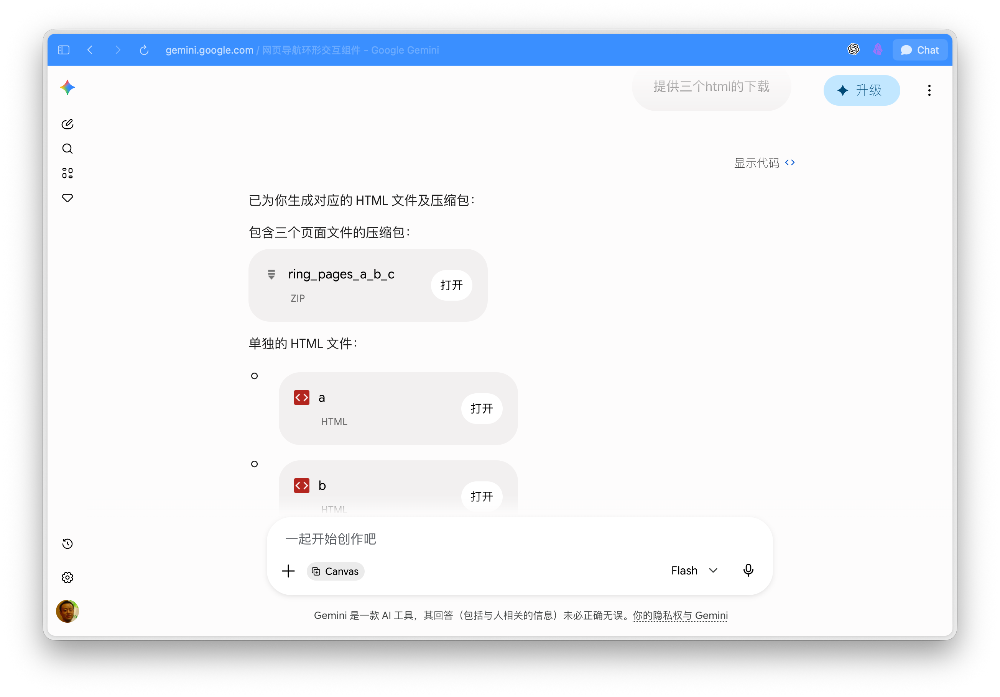
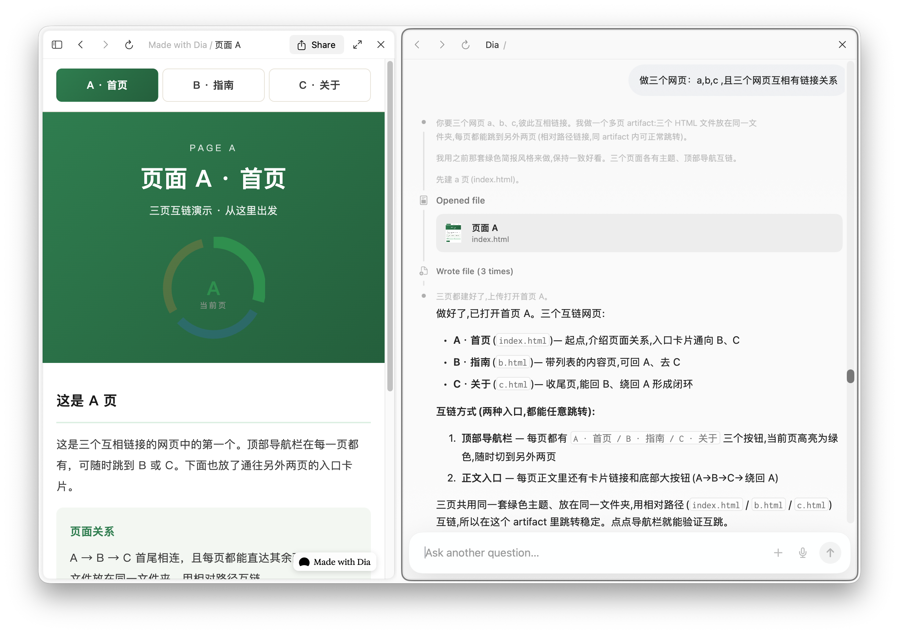
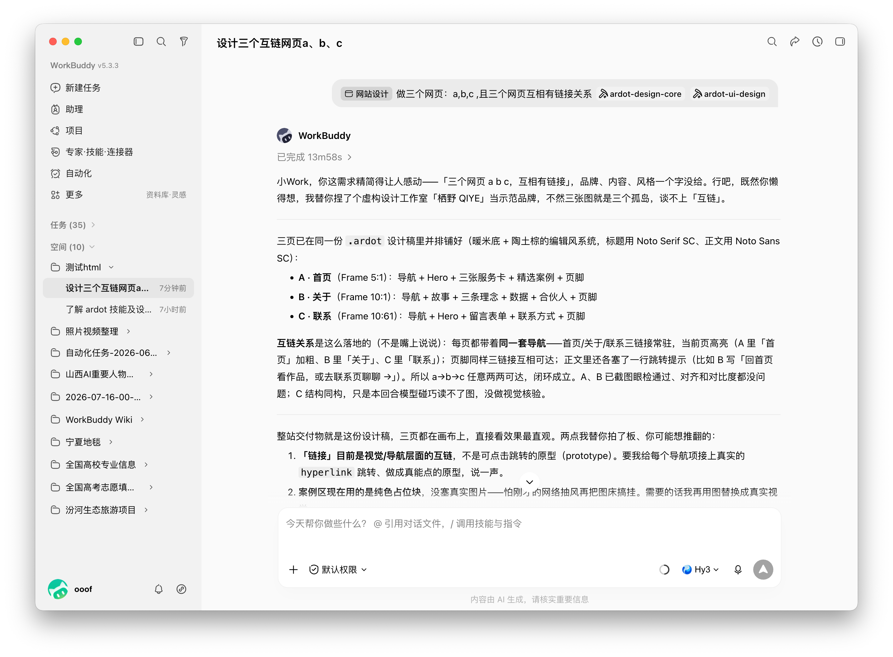
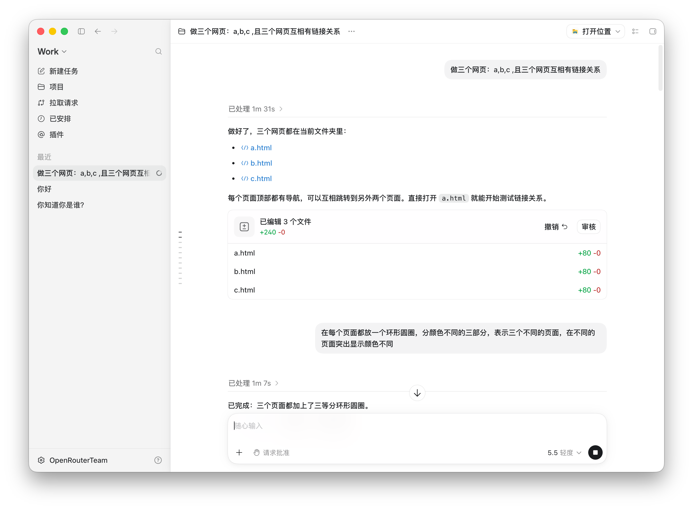
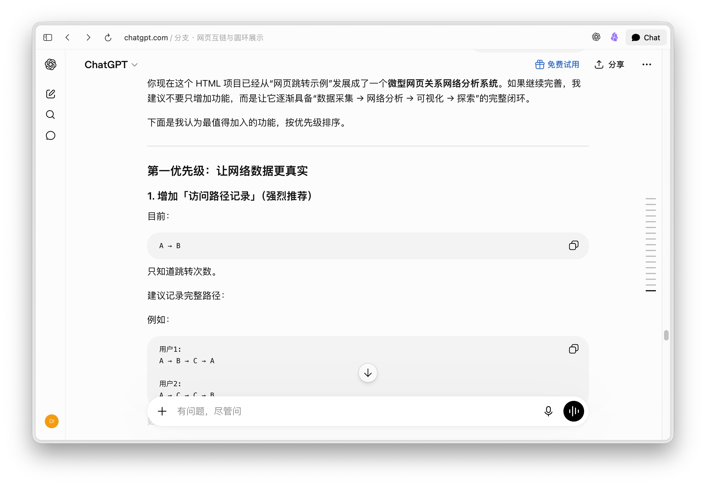

1
做三个网页：a,b,c ,且三个网页互相有链接关系
AI Agent Web Test
这是一场测试，用五个不同的 AI Agent 制作网页的比较。一共输入两个提示词，然后观察它们生成的不同网页效果。
做三个网页：a,b,c ,且三个网页互相有链接关系
在每个页面都放一个环形圆圈，分颜色不同的三部分，表示三个不同的页面，在不同的页面突出显示颜色不同

截图展示 Gemini 生成的页面气质与视觉组织方式，便于和其他 Agent 结果对照。
打开页面
截图左侧有 Dia 生成的页面预览，右侧是 Dia 的制作过程记录。
打开页面
截图显示 WorkBuddy 任务界面与生成说明，适合放在 WorkBuddy 结果入口。
打开页面
截图显示 ChatGPT/Codex 创建并编辑三个 HTML 文件的过程。
打开页面
截图呈现 ChatGPT Web 生成页面的整体效果，延续三页互链与环形标记的测试主题。
打开页面